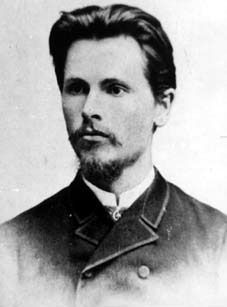

Vincas Kudirka
 Vincas Kudirka (1858-1899)- prozininkas, poetas, publicistas, vertėjas, vienas Tautinio sąjūdžio ideologų, įvertinęs socialinio kriticizmo tradiciją lietuvių kultūroje. Tėvo verčiamas 1877m. įstojo į kunigų seminariją, tačiau vėliau buvo pašalintas dėl pašaukimo stokos. Jis savo lėšomis pabaigė Marijampolės gimnaziją ir išvyko į Varšuvą studijuoti istorijos-filologijos. Dar būdamas studentu, įkvėptas laikraščio „Aušra“, įsitraukė į tautinio atgimimo judėjimą. 1889m. prisidėjo prie žurnalo „Varpas“ leidimo V. Kudirka siekė veikti visuomenės sąmonę, skatino ugdyti tautinę ir pilietinę savivoką, gynė žmogaus ir tautos teises, rūpinosi lietuvių valstietijos ekonominiu ir agrariniu lavinimu, kritikavo valdininkų dorovę, griežtai smerkė Rusijos valdžios vykdomą rusinimo politiką. Varpe leisti straipsniai pasižymėjo gyva kalba, ironija ir sarkazmu, meninių priemonių derinimu su faktais, pasakos elementais, dialogais. 1890 metais organizavo laikraščio „Ūkininkas“ leidimą, tais pačiais metais pradėjo dirbti gydytoju Šakiuose, kur jis subūrė styginių instrumentų ansamblį bei surado sielos draugę, našlę V. Kraševskienę, kuri paskutinėmis Vinco Kudirkos gyvenimo dienomis labai juo rūpinosi, jam susirgus džiova. 1898m. jis parašė „Tautišką giesmę“, po metų paliko šį pasaulį, tapęs neginčijamu tautinės kultūros herojumi.
Kūryba
Pirmajame Varpo leidinyje išleido eilėraštį „Labora!” „Gražu, gražiau ir gražiausia“- parašytas Lietuvos draugijos įkūrimo proga. „Ne tas yra didis”- apmąstantis kovos už demokratinę visuomenę, teisingumo, minties laisvės ir lygybės idėjas. „Lietuvos šviesuoliams”- lietuvių inteligentijai skirtas auklėjamojo pobūdžio eilėraštis. „Maniemsiems”- eilėraštis parašytas po Kražių įvykių. „Valerijai”- meilės sonetas. „Tautiška giesmė”- eilėraštis, kuriam V. Kudirka parašė muziką, vėliau tapęs Lietuvos himnu. „Viršininkai“ (1895 m.), „Lietuvos tilto atsiminimai“ (1896 m.), „Cenzūros klausimas“ (1898 m.) ir „Vilkai“ (1898 m.)- satyros, išjuokiančios caro valdininkus Lietuvoje, spaudos draudimą, lietuvių inteligentų bailumą.
Tautiška giesmė
Vincas Kudirka pirmą kartą Tautišką giesmę išleido savo redaguotame laikraštyje „Varpas“, jis yra šios giesmės teksto ir natų autorius. Nors dabar „Tautiška giesmė“ yra tapusi Lietuvos himnu, tačiau Kudirka šio kūrinio nesureikšmino, nesutelkė jam didelio dėmesio. Tik po jo mirties „Tautiška giesmė“ buvo pradėta dainuoti įvairiuose renginiuose. Žmonės šią giesmę gerbė, mėgo, vakarais ar per renginius ją dainuodavo ne vieną kartą. 1905 metais ši giesmė buvo sugiedota Didžiojo Lietuvos seimo surengtame koncerte, taip giesmė išgarsėjo visoje Lietuvoje. Tautiška giesmė
Yra sukurtas Justino Lingio filmas apie Vincą Kudirką, jo gyvenimą. Jame išsamiau yra atskleidžiama V. Kudirkos svarba Lietuvai, jo pasiekimai, kūryba. "Pasijutau lietuviu esąs"
Jo kūrybos galima pasiklausyti LRT mediatekoje. Vidurnakčlio lyrika
Galerija